START WITH CURIOSITY.
Early logo studies, photo composites, social graphics, food ads, typography, and visual experiments built the foundation.
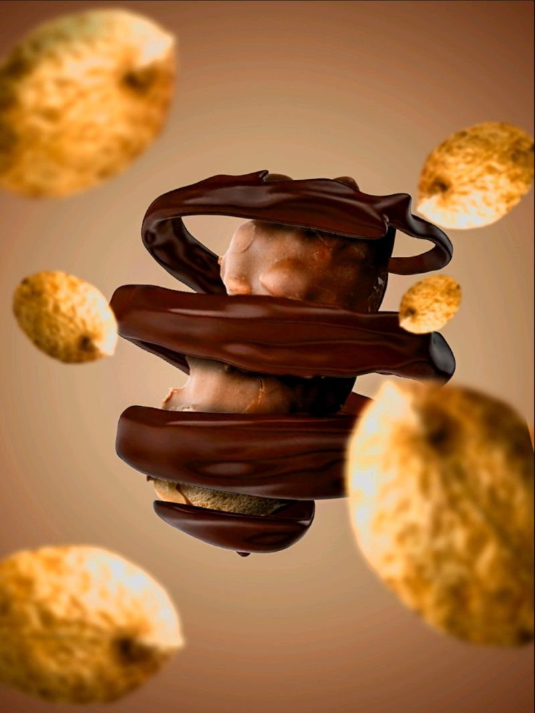
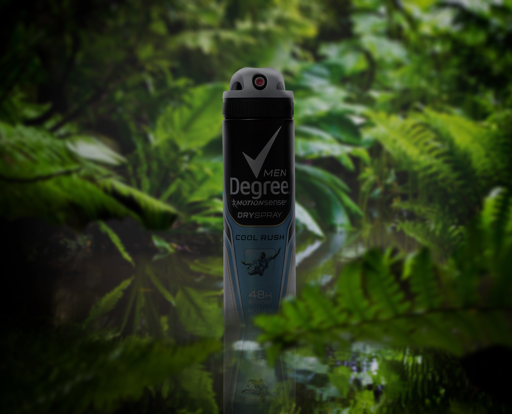
COURSEWORK COMPLETE • AVAILABLE NOW
I’m Danielle Julian — a multidisciplinary designer blending graphic design, UX/UI, branding, front-end web, advertising, interaction design, and visual storytelling into experiences that feel clear, memorable, and alive.
01 / JOURNEY
From self-taught visual experiments to complete products, coded experiences, research-driven interfaces, and campaign systems.
Early logo studies, photo composites, social graphics, food ads, typography, and visual experiments built the foundation.


Poster systems, advertising, branded compositions, photo manipulation, and web concepts became more intentional and controlled.
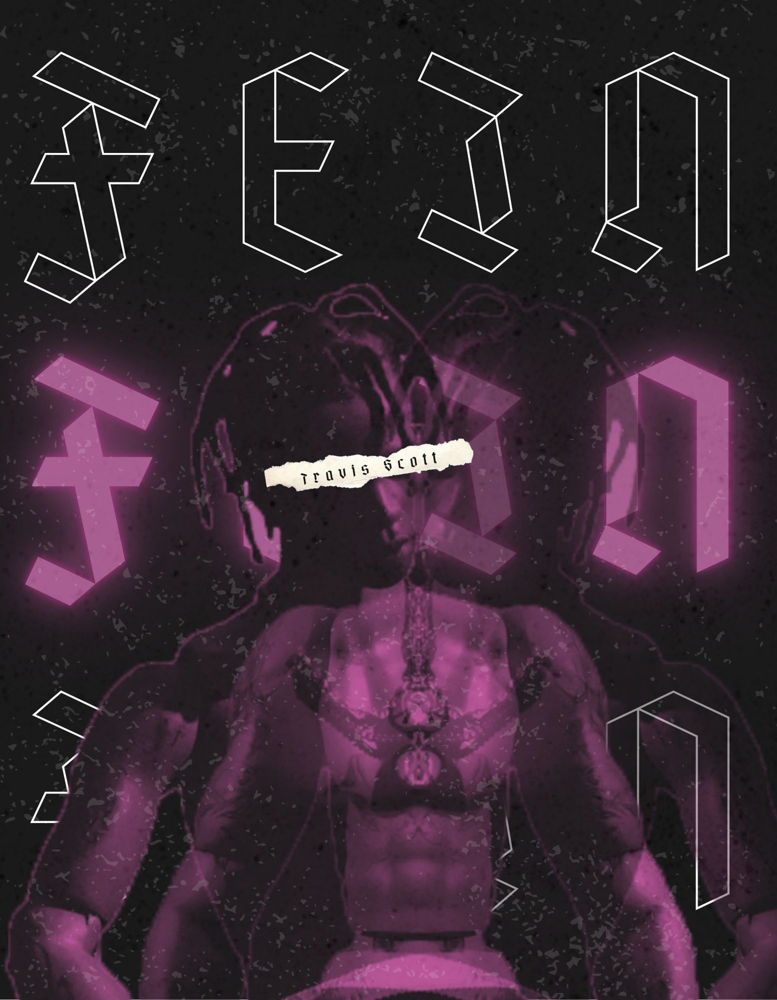
UX/UI, research, interaction states, front-end coding, branded systems, and product storytelling expanded the practice beyond static visuals.
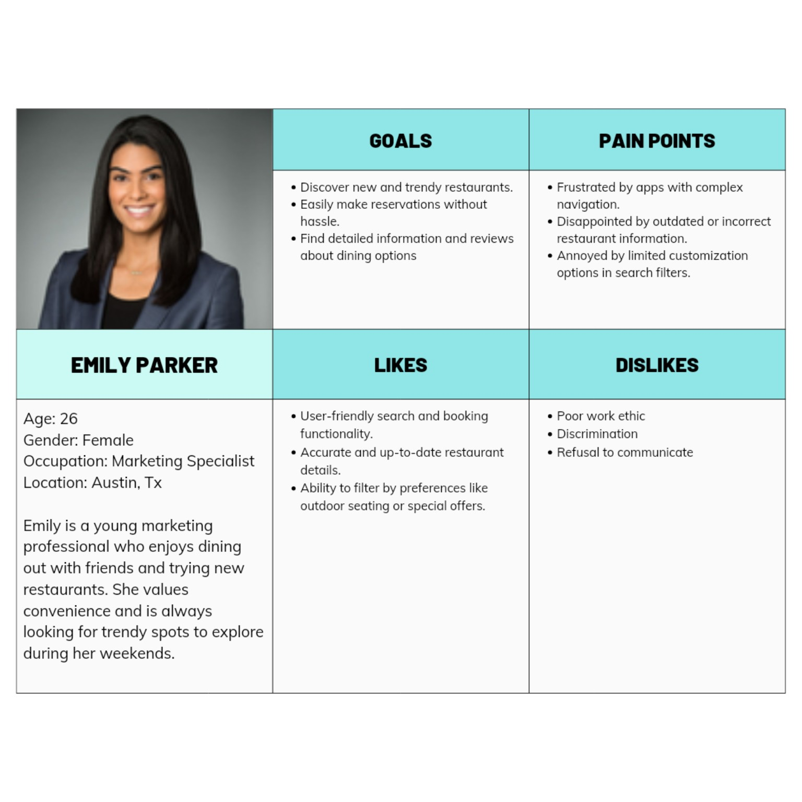
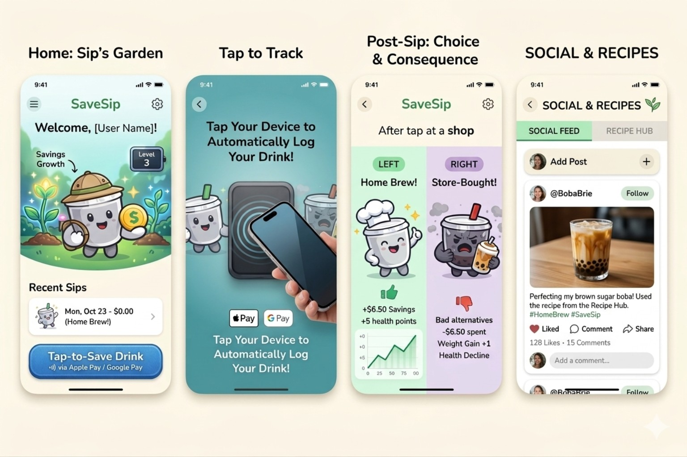
Coursework is complete, commencement is in December 2026, and I’m available for professional opportunities now.
LET'S CONNECT →02 / FEATURED CASE STUDIES
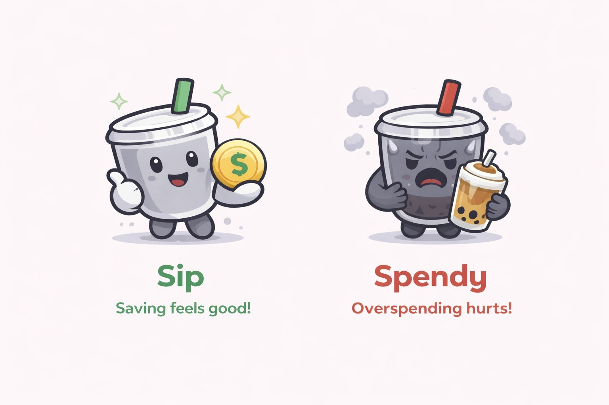
CASE 01 • UX/UICAPSTONE • UX/UI • BRANDING
A gamified drink-spending tracker designed to make everyday financial awareness feel warmer, faster, and more motivating.
UX/UI • PERSONALIZATION • WEB
A guided recipe-building experience that turns cravings into personalized recipes using flavor, texture, ingredients, swaps, and cooking method.
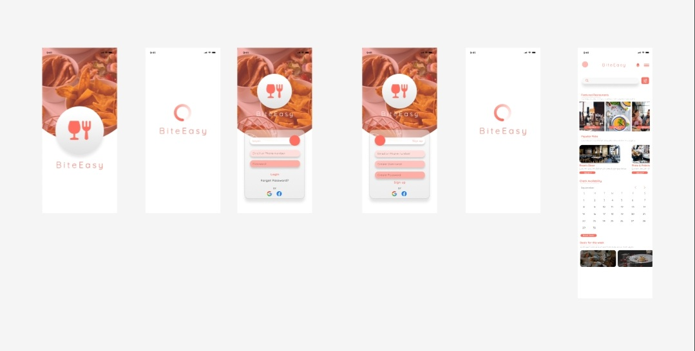
CASE 02 • PRODUCT03 / THE WORK WALL
A living wall of posters, campaigns, composites, brand experiments, product work, and web design — including newly added projects.
04 / INTERACTION LAB
Shopping-list research around repeat buys, functional customization, user-controlled suggestions, and lower-friction grocery planning.
A smart-city pedestrian interface built around clear state cues, accessibility, fallback behavior, and confidence under time pressure.
A coded study experience with question banks, modes, scoring, progress, explanations, and a final matching challenge.
Interactive recipe puzzles using drag-and-drop, custom selections, dynamic poem building, progress feedback, and playful personalization.
Augmented-reality storytelling combining original trigger imagery, motion, sound, and layered depth.
05 / 2021–2024 ARCHIVE
Not hidden. Not erased. The archive shows the distance traveled — from early self-taught experiments to the current multidisciplinary portfolio.
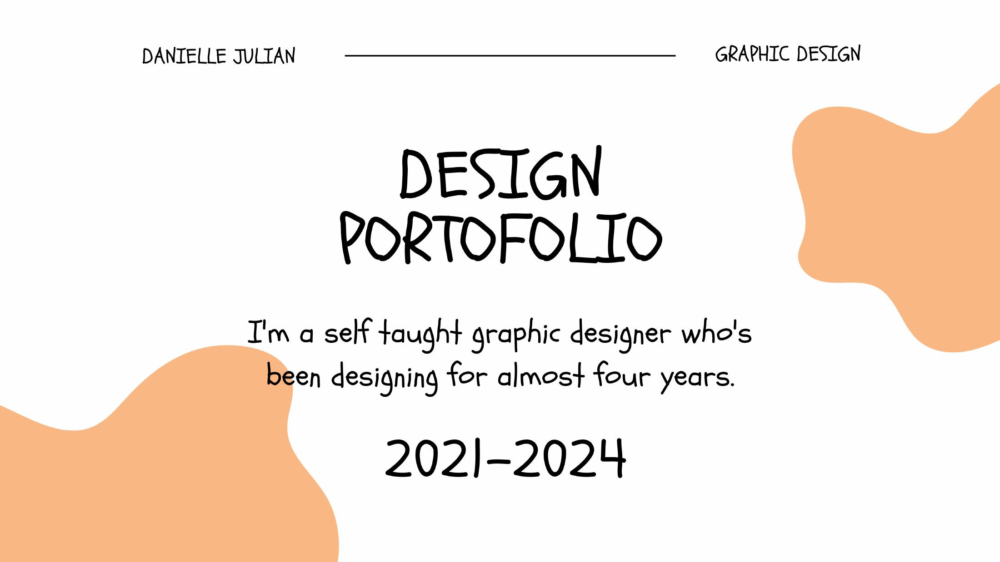
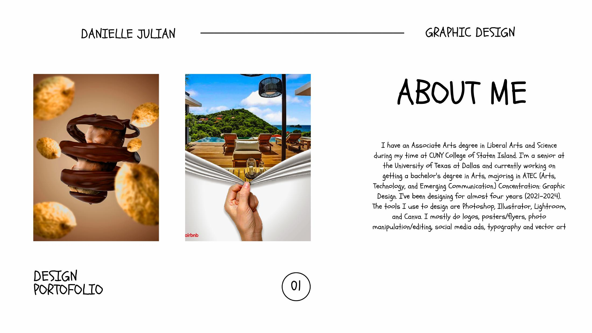
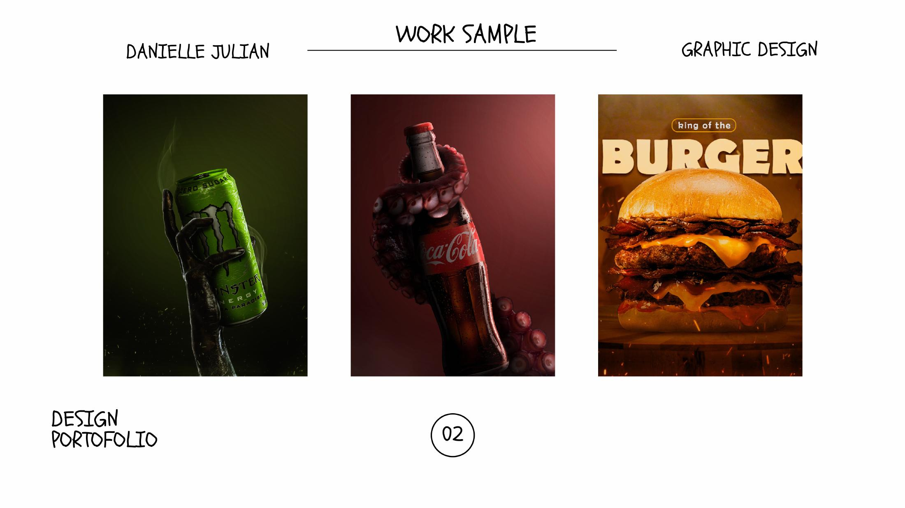
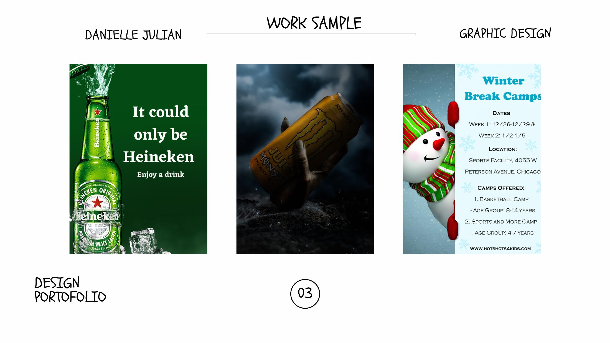
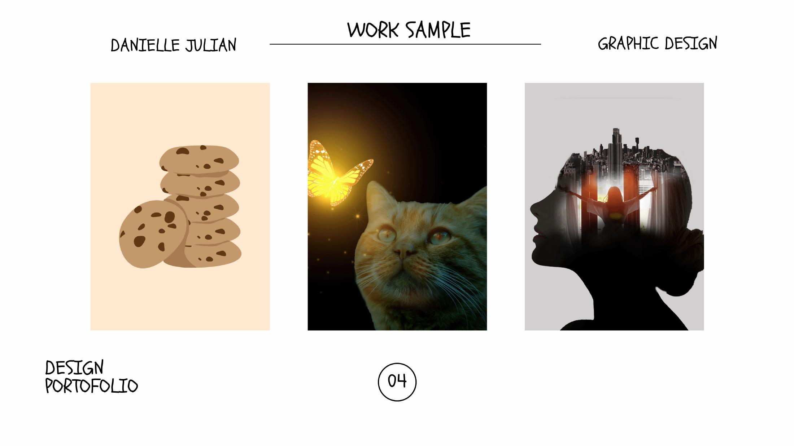
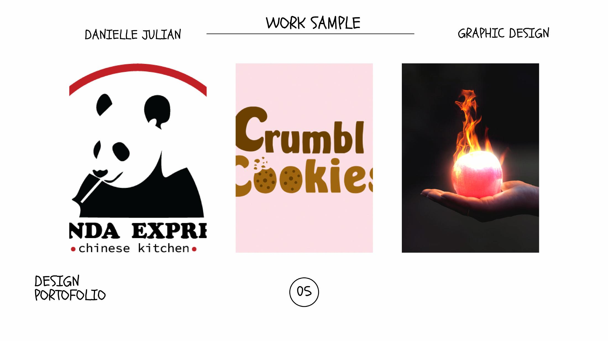
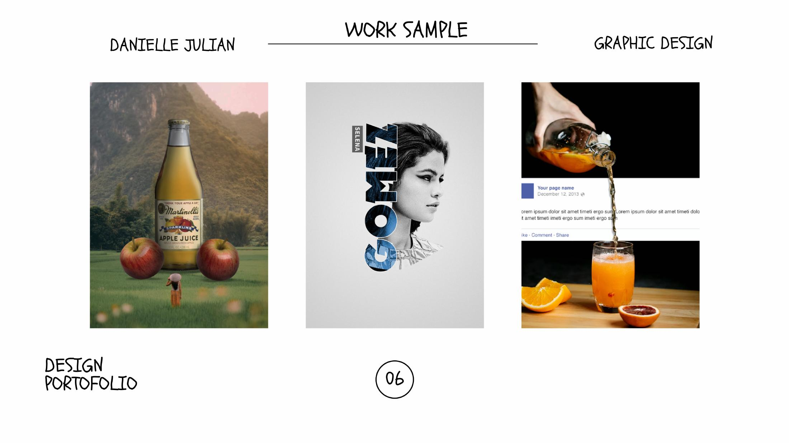
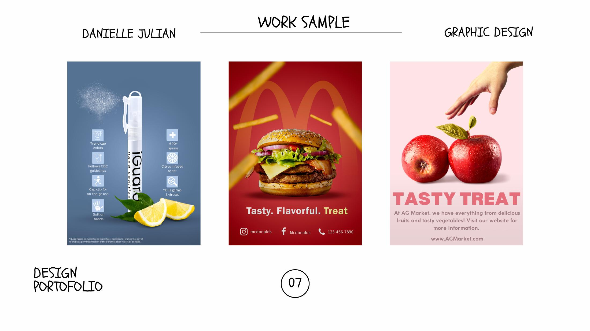
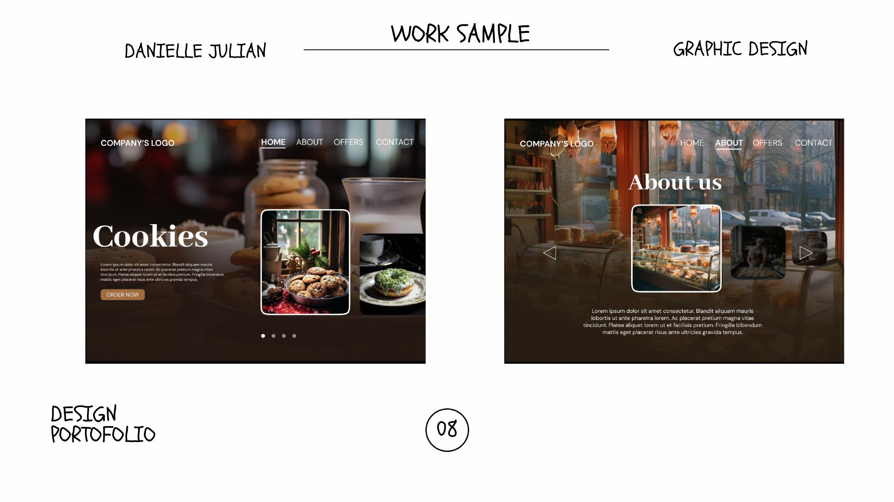
06 / TOOLKIT
07 / NEXT
Graphic design • UX/UI • branding • web • marketing design • interaction design